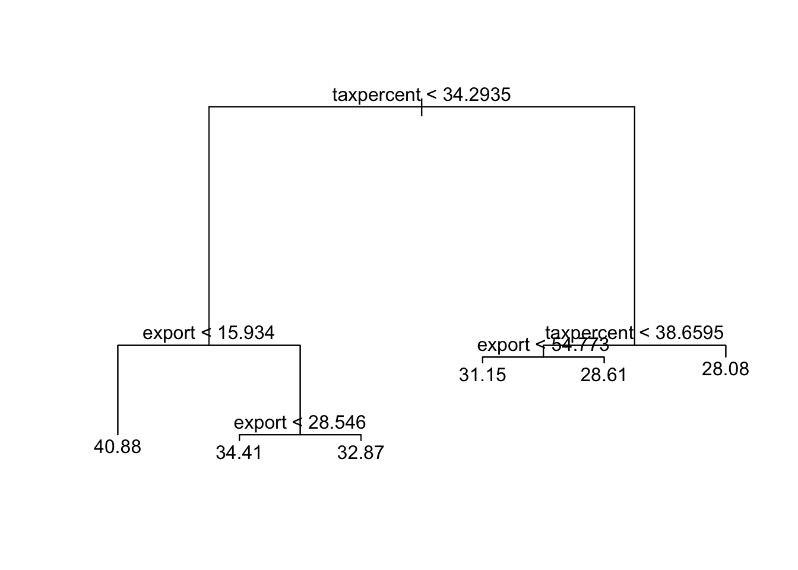
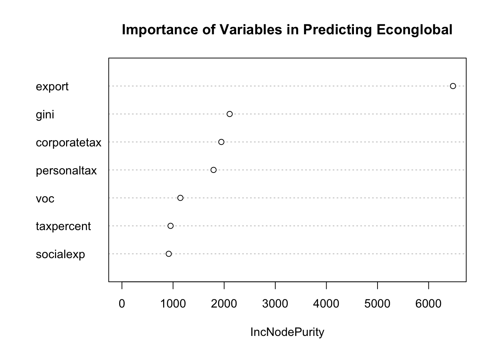

library(randomForest)
library(tidyverse)Supervised Learning Methods
Further Statistical Models
So far, we have covered traditional statistical models. In this chapter, we introduce some supervised learning data science methods, including Regression Trees, Random Forest, Causal Forests, and Naive Bayes.
Use the right sidebar for navigation. R-code provided at the bottom.
Regression Trees
Trees and Stratification
Regression Trees are an alternative way to obtain predictions of an outcome \(y\) from explanatory variables \(x\).
Instead of modelling how \(y\) changes with every unit increase in \(x\), regression trees instead model stratification.
Tree-based methods will divide the independent variable \(x_j\) into 2 regions, splitting \(x\) at some value \(x = s\). For example, if we had an \(x\) variable such that \(x \in [0, 100]\), we could split the variable at \(x = s\) to create two regions: \(x^{(1)} \in [0, s]\) and \(x^{(2)} \in [s, 100]\).
Then, tree-based methods will calculate the mean \(y\) value in each region created: \(\bar y^{(1)}\) and \(\bar y^{(2)}\). These means will be the predictions of \(\hat y\).
- If a unit \(i\) has an \(x\) value that falls into region \(x^{(1)} \in [0, s]\), their predicted \(\hat y = \bar y^{(1)}\).
- If a unit \(i\) has an \(x\) value that falls into region \(x^{(2)} \in [s,100]\), their prediction \(\hat y = \bar y^{(2)}\).
Determining the Thresholds
So we know that trees will stratify/divide our observations into groups by some threshold \(x = s\). But how do we decide which threshold \(s\),?
For continuous \(y\) variables, to determine the threshold \(s\) in which to split \(x\), the algorithm of tree regressions will find the optimal threshold \(x = s\) that reduces the residual sum of squares (RSS) of the predictions the most:
\[ RSS = \sum\limits_{i=1}^n(y_i - \hat y_i)^2 \]
Essentially, the computer tests every possible threshold value of \(x_j = s\), and finds the threshold that reduces the sum of squares the most.
For binary \(y\) variables, trees will determine the threshold \(s\) in which to split \(x\), based on the threshold \(x=s\) that reduces the classification error rate.
The classification error is essentially how many predictions \(\hat y\) do not match to the actual \(y\).
Growing a Tree
The process of growing a tree is as follows. Assume now we have more than one explanatory variable.
- Test all possible thresholds \(x_j = s\) for each \(x_j \in \{x_1, \dots, x_k\}\).
- Identify the specific variable \(x_p \in \{x_2, \dots, x_k\}\) which has a specific threshold \(x_p = s^*\) that has the greatest reduction in residual sum of squares (or classification error rate), for all combinations of \(x_j\) and threshold \(s\).
- Now, divide that specific \(x_p\) at that specific threshold \(s^*\), creating two regions \(x_p^{(1)}, x_p^{(2)}\).
- Now, we repeat the process of testing all possible thresholds \(x_j = s\) for each \(x_j \in \{x_1, \dots, x_k \}\) and finding the specific variable-threshold \(x_m = s^{**}\) that results the in the greatest reduction in RSS (or classification error rate) within \(x_p^{(1)}\). Create 2 more groups from within \(x_p^{(1)}\).
- Then, do the same for \(x_p^{(2)}\). Create 2 more groups from with \(x_p^{(2)}\).
- Keep on going, finding the variable-thresholds which reduce the RSS the most from each previous subregion we have created.
- Continue doing this until some stopping criteria. Find the average \(y\) in each of the groups you have, and those are the predicted \(\hat y\).
It is possible for a variable to occur multiple times with different thresholds.
Example of Growing a Tree
Below is an example of growing a tree:

We can see that the first (top) split is in the variable taxpercent, at threshold 34.2935. That means that specific variable-threshold split reduced the RSS the most of any variable-threshold combination.
Notice how after the first split, we only divide each subregion. We do not go back to the top/whole data set.
Notice how taxpercent re-appears again on the right side of the tree. It is possible for a variable to occur multiple times.
At the end, you can see the numbers at the bottom. These are called leaves, and are the final categories/groups of the tree with their mean \(y\) labelled. Those mean \(y\) will be the predictions for each observation that falls into that group.
The earlier a variable is split, the more influential the variable is. We will discuss this idea further later in the chapter.
Benefits and Drawbacks
Simple regression trees have both benefits and drawbacks.
One of the best things about decision trees is that they incorporate interactions between variables. Lower-level splits of variables are interacting with higher-level splits of variables. This allows regression trees to be excellent for non-linear predictions.
Regression trees are also great for visualisation, and are quite easy to explain visually without invoking complex statistics or mathematics.
The downside of regression trees is that they have extremely high variance. If you just slightly change the data, your predicted results will be completely different, and even the order of variables and thresholds will completely change. This is called overfitting.
The Problem of Overfitting
This is not a good thing - after all, we want to be able to predict unseen data. Overfitting causes simple regression trees to be poor predictors on their own.
Thus, we almost never use simple regression trees for prediction. We tend to use more advanced models, Random Forest and Bagging, which build on regression trees, but solve this issue of overfitting.
Bagging and Random Forest
Bootstrap Sampling
While regression trees have some benefits, they suffer from overfitting and high variance. Bootstrap Aggregation is a procedure for reducing the variance of a statistical learning method.
This procedure builds on a simple statistical idea: in a set of \(n\) samples \(Z_1, \dots, Z_n\) each with variance \(\sigma^2\), the variance of the means \(\bar Z\) of all the samples is \(\frac{\sigma^2}{n}\). Since \(n\) is in the denominator, that implies increasing the number of samples \(n\) will reduce the variance of our predictions.
However, we typically only have one sample of data. How can we increase \(n\) if we only have one sample? The answer is Bootstrap Sampling. Essentially, we sample with replacement from our original sample.
To create a bootstrap sample, we choose 1 observation at random from our original sample. We add that observation to our bootstrap sample, and replace it back into our original sample. Then, we draw another observation, add it to our bootstrap sample, and replace it back. We do this \(n\) times (\(n\) being the sample size of our sample).
If we do this procedure multiple times, we will end up with a few similar, but slightly different data sets. We are essentially replicating the process of obtaining new data sets, without gathering more data. Now, with our multiple data sets, we can use bootstrap aggregation to reduce our variance.
Bagging Models
Bagging models apply bootstrap sampling to tree regressions.
- We first generate \(B\) number of bootstrap samples.
- Then, we train a tree on each different sample \(b\), creating a prediction function \(f_b(x) = \hat y_b\) for each sample, which specifies what values of \(x\) result in what predicted \(\hat y\) according to the tree.
- Then we average all of the sample predictions together to obtain our final prediction function \(f_{bag}(x)\).
\[ f_{bag}(x) = \frac{1}{B}\sum\limits_{b=1}^Bf_b(x) \]
Bagging reduces the variance of trees, and is one of the most accurate prediction methods, frequently outperforming both linear and non-linear methods.
However, bagging is still not perfect. This is because bagging trees are heavily correlated: in general, the trees will have the same top-level \(x_p\) variable, especially if there is one very strong predictor in our explanatory variables.
This is an issue - highly correlated trees, even if averaged, do not reduce the variance as much as we might need. This is where the next class of models, Random Forests, come in.
Random Forest Models
Bagging has an issue of having highly correlated trees, which may not reduce variance as much as we desire. Random Forests solve this issue by not only bootstrapping observations like Bagging does, but also sampling a subset of explanatory variables for each tree.
For example, let us say you a set of explanatory variables \(\mathcal X = \{x_1, \dots x_k\}\). For every bootstrap sample of observations \(b\) that we did in bagging, Random forest will also sample a subset of explanatory variables \(\mathcal X_b\), which contains only \(g<k\) number of explanatory variables.
This means that each tree Random Forest produces only has a subset of \(g\) explanatory variables, not the total number of \(k\) explanatory variables. This means that sometimes, influential variables \(x_p\) will not be included in the subset \(\mathcal X_b\), which will allow for other predictors to get a chance to shine.
Thus, Random Forest will have less correlated trees, and thus, will typically have more accurate predictions.
Generally, the size of the subset of explanatory variables \(\mathcal X_b\) will typically be \(g=\sqrt{k}\), the square root of the total number of explanatory variables. However, you can play around with this (discussed in the next section).
Model Selection for Prediction
There are a few choices you must make when specifying the model you are using.
- Should you use Random Forest or Bagging? Typically, Random Forest is better, but this is not always the case.
- If you do choose Random Forest, what size of the subset of explanatory variables \(\mathcal X_b\) should you use? Typically, the standard is to use the square root of the number of explanatory variables, but this is not a fixed rule.
Mean of squared residuals is a general measure of how well the model performed. It is the mean of the squared errors, where the errors are the differences between the actual dataset \(y_i\) value and the predicted \(\hat y_i\) value.
In R, the mean of squared residuals metric is calculated on testing data - testing the model on units that were not included in a specific bootstrap sample. Thus, this is a good measure of how predictive your model is, without worrying about overfitting.
You should test all different possibilities of model selection choices, and see which one reduces the mean of squared residuals the most.
Model Selection for Classification
For classification tasks, you have the same decisions (bagging vs. random forest, what size \(\mathcal X_b\)) as prediction tasks.
The simplest metric to help you make the decision is the error rate. This is simply the percentage of observations the model got wrong (predicted one category when it should have been the other).
We can also dig into more detail.
- The False Positive Rate is the observations that are \(y=0\), but our model predicted incorrectly as \(\hat y = 1\).
- The False Negative Rate is the observations that are \(y=1\), but our model predicted incorrectly as \(\hat y = 0\).
The inverses of false positives/negatives are specificity and sensitivity:
- Specificity is the percentage of observations that are \(y=0\), that our model correctly predicted as \(\hat y =0\).
- Sensitivity is the percentage of observations that are \(y=1\), that our model correctly predicted as \(\hat y = 1\).
The metric on which to focus on depends on our goals of classification. Choosing the right model requires some subjectivity. For example, if we are trying to predict if a patient has a serious disease, we probably want more false positives rather than under-detecting people who are actually sick. But for judicial systems, since we do not want to put an innocent person in jail, we might prefer lower false positives, and more false negatives.
Importance Statistics
One of the downsides of Bagging and Random Forest is that they are harder to interpret than Regression Trees.
Regression Trees produce a nice diagram, with the most important variables near the top. However, Bagging and Random Forest average hundreds or thousands of different trees, so we cannot really draw a diagram out.
This is where importance statistics comes in. To calculate importance, we “remember” the reduction in RSS (or error rate) every time we split a tree, for every bagging sample \(b\). Then, we figure out which variables on average reduce the RSS (or error rate) the most.

Above is an example of the importance plot. This allows us to determine which explanatory variables are the most influential in determining the predictions, which can be useful in interpretation.
Causal Forests
Naive Bayes Classifier
Implementation in R
You will need the randomForest and tidyverse packages.
For replication purposes (if you are publishing a paper), you may also want to set a random seed, which will ensure your bootstrap and variable sampling remains consistent in replication.
set.seed(1234) #any number will work
Bagging Model
You can train a bagging model with the randomForest() function:
model <- randomForest(Y ~ x1 + x2 + x3 + x4,
data = mydata,
na.action = na.omit,
mtry = 4, #equal to k
importance = TRUE)
#call object to see output
modelThe output will contain summary statistics.
Note: you can also do \(Y \sim .\) in the formula. The \(.\) symbolises that you want to include all other variables not \(Y\) within your dataframe into your model. This speeds up the process of writing every single explanatory variable out.
Random Forest Model
You can train a random forest model with the randomForest() function:
model <- randomForest(Y ~ x1 + x2 + x3 + x4,
data = mydata,
na.action = na.omit,
mtry = 2, #equal to sqrt of k
importance = TRUE)
#call object to see output
modelThe output will contain summary statistics.
Note: you can also do \(Y \sim .\) in the formula. The \(.\) symbolises that you want to include all other variables not \(Y\) within your dataframe into your model. This speeds up the process of writing every single explanatory variable out.
Predictions
You probably want to make predictions with your model (that is kind of the point of these models).
We can use the predict() function to generate predictions:
mypredictions <- predict(model, newdata = my_new_data)my_new_data is a dataframe with a bunch of explanatory variable values (for every explanatory variable) for a collection of observations, that you wish to predict \(\hat y\) for.
model is the name of the object in which you stored your trained model to.
Importance Plot
To see the importance of each explanatory variable, we can use the varImpPlot() function:
varImpPlot(model,
main = "Title of the Graph",
type = 2)Do not change type = 2. That specifies something technical that you do not need to worry about.